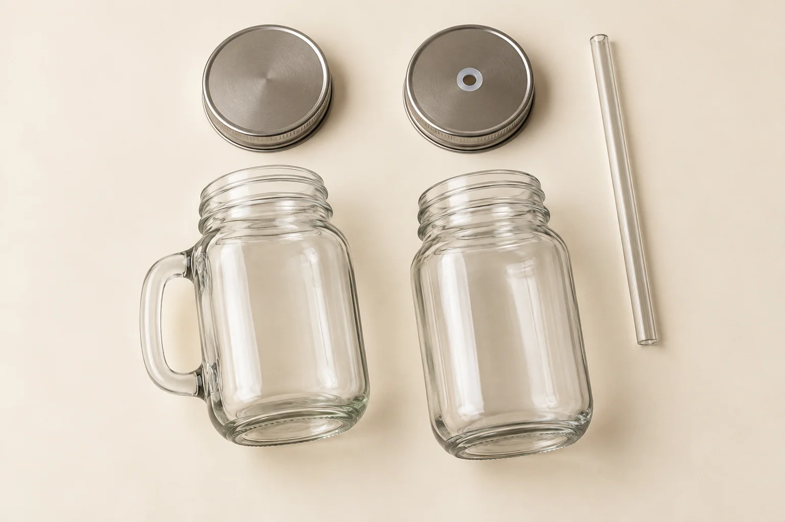
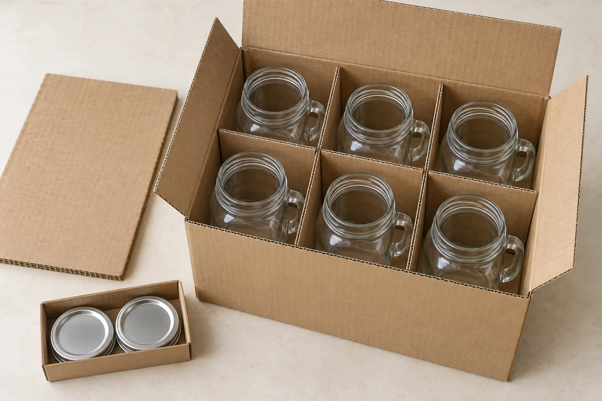

Buying mason jar drinking glasses in bulk starts with a simple decision: what exactly should arrive in the carton? An open handled glass, a jar with a solid lid and a complete lid-and-straw set are different purchases, even when the photographs look similar. Define the drink, the complete set and the packing before comparing unit prices.
For cafés, casual restaurants, event suppliers and drinkware retailers, the useful comparison is how each jar works in service: the space for ice, the grip around the handle, the opening for a straw, the room on a tray and the protection inside a carton. This guide turns those choices into a buying brief you can send with a product shortlist.
Quick buying checklist
- For open drink service: compare the rim, intended fill, handle clearance and tray footprint; price the glass without unnecessary accessories.
- For a lid-and-straw presentation: specify the exact jar, lid, straw and any removable insert as one set; check the assembled sample.
- For retail sets: define the number of glasses and accessories in each sellable pack, then approve the insert and master carton separately.
- For every bulk order: confirm capacity in mL, maximum outside dimensions, component materials, quantities per design and what the quotation includes.
Start with the Mason Jar Glasses collection. If your main requirement is pantry storage or closure selection for stored contents, use the separate Mason Jar & Glass Storage Buying Guide.
1. Choose the jar around the finished drink
Write down the beverage, the intended liquid portion, the ice format and any garnish. Then test the complete drink in the sample. A capacity printed in a catalog does not tell you how much liquid the glass accommodates once ice, fruit and working headspace are included.
For iced tea or lemonade, check that the opening admits the ice you actually use and allows comfortable drinking or straw access. For thicker drinks, test the selected straw with the finished recipe. For events, carry several filled samples on the intended tray to judge spacing and handling together.
Keep the assortment focused. A larger jar can create a different presentation, but it also changes the drink portion, shelf clearance and carton layout. Choose an additional size only when it serves a defined menu item, retail offer or customer requirement.
2. Handles: compare grip and the full outside width
A handled mason jar offers a distinct mug-style presentation. The handle also projects beyond the body, so body diameter alone is not enough for selecting trays, rack compartments or packaging cells.
Review these points on the actual sample:
- Finger clearance: check the opening inside the handle and the room between fingers and the jar body.
- Filled handling: lift, carry and set down the jar with the intended drink inside; evaluate the complete weight and grip.
- Maximum width: measure across the body and handle together, as well as the body diameter and total height.
- Contact points: inspect the handle area, rim and base against your agreed appearance criteria.
- Artwork space: decide whether the design faces toward or away from the handle and confirm the usable decoration area.
A handleless version removes the side projection, but still needs its own checks for grip, outside diameter and fit. Neither a straight-sided jar nor a jar-shaped glass should be treated as safely stackable without confirmation for the exact model. A handle also does not establish suitability for hot beverages.

3. Lids and straws: specify the complete set
When sourcing mason jar drinking glasses with lids, ask the supplier to quote an explicit component list. A lid or straw appearing beside a glass in a photograph is not enough to establish what the quoted price includes.
Glass only: useful when you intend open service and have no need for a lid. Confirm whether any accessory shown in the listing is excluded.
Glass with a solid lid: define the lid material, finish, lining or gasket if present, and the intended use. A screw-on lid does not by itself establish leak resistance or airtight storage.
Glass with a straw-opening lid: confirm the hole size, edge finish, any removable insert and the intended straw diameter. An opening for a straw means the assembly should not be assumed to be sealed for carrying loose in a bag.
Glass, lid and straw set: record the straw material, length, outside diameter and pieces per set. Check the straw length with the lid installed, then review how the components will be cleaned, dried and packed.
Do not assume that all products described as “mason,” “regular mouth” or “wide mouth” share interchangeable closures. Request the actual opening and thread specification, and approve the lid on the selected jar. For repeat orders, identify the approved jar and lid references together so that one component is not silently substituted.
4. Sizes: separate the menu portion from the catalog size
Ask whether the listed capacity is brimful, nominal or measured to another fill level. Record the intended serving level separately. If the quotation uses ounces, confirm that it means fluid ounces and identify the convention.
For orientation, using approximately 29.57 mL per US fluid ounce:
- 12 US fl oz: approximately 355 mL.
- 16 US fl oz: approximately 473 mL.
- 20 US fl oz: approximately 591 mL.
- 24 US fl oz: approximately 710 mL.
These are rounded unit conversions, not recommended serving sizes, stock availability or measured capacities of Glarivo products. The conversion basis is provided by NIST's US customary-to-metric conversion reference.
Use the conversion to notice questions in an offer, rather than forcing a product title to match it exactly. If a title uses a rounded ounce size and the specification gives a different mL value, ask which capacity was measured and by what method.
Record five dimensions with explicit units: overall height, opening diameter, maximum body diameter, maximum width including the handle, and height with the lid installed. Add straw length when a straw is part of the set. Check the assembled item against the actual shelf, tray, rack and proposed pack.
5. Build a shortlist from real product references
Use the collection to shortlist a few shapes, then send the supplier the actual product links. The following are catalog starting points reviewed on September 22, 2026; listing names do not replace a confirmed specification or an approved sample.
- Handled everyday drinkware: the County Fair handled mason jar drinking glass, reference GB2517J, lists 480 mL and 24 pieces per carton. Its title uses 16 oz; confirm the actual capacity convention, complete width and accessories in your offer rather than treating the title as an exact conversion.
- Patterned handled drinkware: compare the soccer-pattern mason jar drinking mug when surface texture is part of your presentation. Check grip, decoration space and cleaning access on the sample.
- A wider-opening jar: the wide-mouth smooth-sided jar is another reference to discuss. The title mentions a plastic lid while the material field mentions a metal lid: resolve the actual lid specification before comparing offers. Establish suitability for beverage service separately from storage or canning wording in a title.
Keep a single comparison brief for all shortlisted models: glass reference, measured capacity, outside dimensions, lid reference, straw reference, decoration, pieces per sellable set and packing specification. This makes it easier to see whether a price difference comes from the glass or from a different set of accessories and services.
6. Packing: protect the handle and count complete sets
Request the unit pack, inner pack and master carton as separate parts of the quotation. The correct configuration depends on whether the order is for restaurant replenishment, individually sold glasses or boxed retail sets.
For handled mason jar glasses, inspect the divider layout around the full body-and-handle width. Check that neighboring glasses cannot contact one another and that an insert does not press against a handle. Ask how lids and straws are secured so they cannot rub against the glass or disappear between packaging layers.
For a retail pack, open and reassemble the packed sample. Count every glass, lid and straw, check the presentation and make sure the complete set can be repacked as intended. Then examine how those retail packs fit inside the shipping carton.

Request these packing fields:
- Number of glasses and accessories per sellable unit.
- Sellable units per inner pack and per master carton.
- Divider or insert layout and protection around handles, rims and decoration.
- External carton dimensions in stated units and gross weight.
- Labeling, pack artwork and the approved packed-sample reference.
- A transit-test plan appropriate to the planned distribution route, agreed with the supplier and logistics partner.
For a planning example, an order of 960 glasses at an agreed 24 glasses per carton needs 40 cartons. At 48 glasses per carton, it needs 20 cartons. These are hypothetical packing options, not promises for a listed model. Fewer cartons do not automatically mean less freight volume: compare external dimensions, total weight and the delivery quotation on the same basis.
7. Compare MOQ, customization and the quotation basis
Ask for minimum quantities separately for an existing clear glass, a decorated glass, each lid color or design, and custom retail packaging. One advertised minimum may not cover every combination. Confirm current availability and reorder conditions for the configuration you select.
For logo work, supply the artwork, size, position and color reference. Show how it should align with the handle or molded pattern. Review a proof on the correct jar profile, followed by a decorated sample when appearance and finish are part of approval.
Compare quotations with the same currency, delivery basis, quantities and packing. Request separate identification of sample charges, artwork or setup charges, accessory costs and freight exclusions. Define whether a target date means goods ready to ship or arrival at your destination, and confirm the event that starts the production lead time.
For boxed assortments and labeling details, continue with the private-label glassware packaging guide.
8. Approve the assembled sample before the bulk order
A useful sample review follows the actual service and packing sequence:
- Confirm the jar reference, capacity method, dimensions and component list.
- Assemble the selected lid and straw; check fit, opening clearance and removal.
- Make the intended drink with its ice and garnish, then test grip and tray spacing.
- Review written use and cleaning instructions for the glass, lid, straw and decoration individually.
- Check the finished artwork and agreed appearance criteria.
- Pack the complete item, inspect handle clearance and count all accessories.
- Record the approved references, photographs, date and any agreed exceptions.
Obtain the product-specific instructions and documents relevant to the intended use and destination. Keep claims about dishwasher use, temperature suitability and closure performance tied to the exact finished configuration. For a broader document-request checklist, see the glassware food-contact safety guide.
Retain the approved sample and packing specification. For a repeat order, ask whether the glass, lid, straw, decoration or insert has changed before treating the previous approval as applicable.
Request a comparable bulk quotation
Choose your preferred references from the Mason Jar Glasses collection, then use the inquiry option on the selected product page. Include the following brief so the quotation covers the complete item you need:
- Use: beverage, menu portion, ice or garnish, sales channel and destination.
- Glass: product link, intended capacity convention, handle preference and key outside dimensions.
- Accessories: glass only or complete set; lid type, straw material and pieces per set.
- Quantity: glasses or sets, quantities per design, and acceptable alternatives.
- Decoration: artwork, position relative to the handle, size and color reference.
- Packing: bulk or retail format, set contents, carton requirements and labeling.
- Approval and timing: sample scope, required documents, delivery milestone and quotation basis.
If you are coordinating these jars with other drinkware, use the Restaurant & Bar Glassware guide to check the wider menu, tray and storage requirements.
Frequently asked questions
What size mason jar drinking glass should I buy for a café?
Start with the complete drink, including ice and garnish, then confirm the intended fill and headspace in a sample. The nominal size alone is not enough. Check handling and equipment fit alongside capacity before choosing the final model.
Are lids and straws included when buying in bulk?
Confirm the component list in the quotation. Ask for the quantities and references of the glass, lid, straw and any removable insert. Do not infer inclusion from a product photograph or a category title.
Can I use any mason jar lid on a mason jar drinking glass?
Use the confirmed opening and thread specification, and check the assembled sample. Similar-looking necks or shared marketing names do not establish compatibility. Record approved replacement lid references for later orders.
Are handled jars suitable for hot drinks or canning?
Do not infer either use from the handle or mason-style shape. Obtain instructions for the exact glass and closure configuration and verify suitability for the intended process. This article concerns drinking-glass procurement, not a canning process guide.
Are mason jar drinking glasses dishwasher-safe?
Request written care instructions for the finished glass and every accessory. A lid, straw or decorated surface may require different care from the plain glass body. Fitting inside a dishwasher rack does not establish dishwasher suitability.
What is the minimum order quantity?
Request the current minimum for the selected model and complete configuration. Decoration, lid choices, assortment quantities and custom packaging can change the order scope. Use a model-specific quotation rather than a universal MOQ assumption.